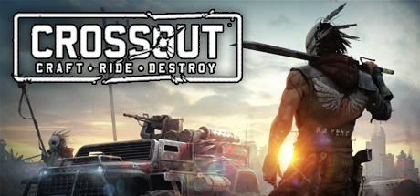
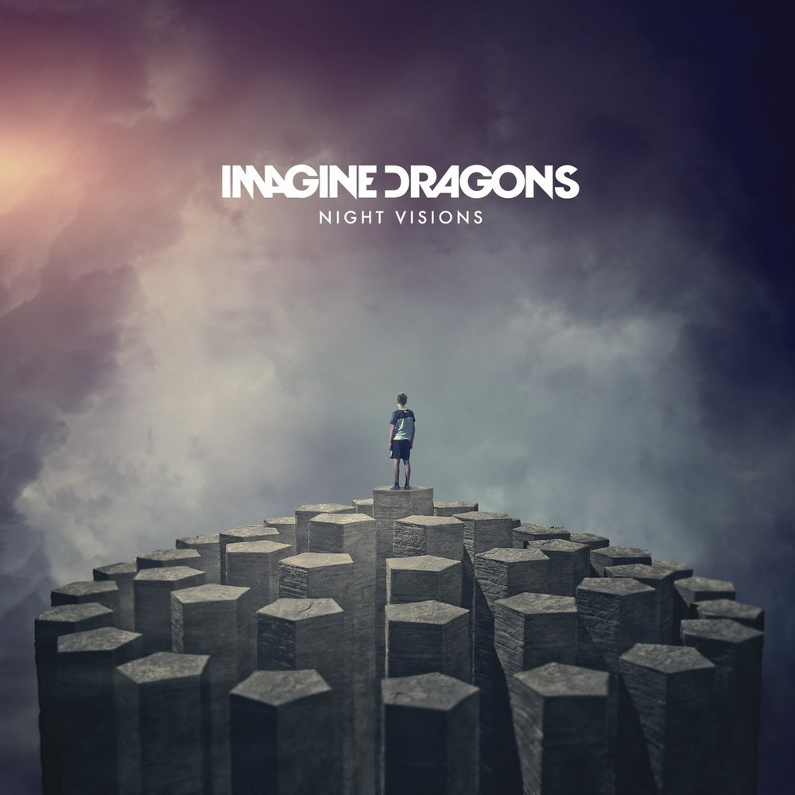
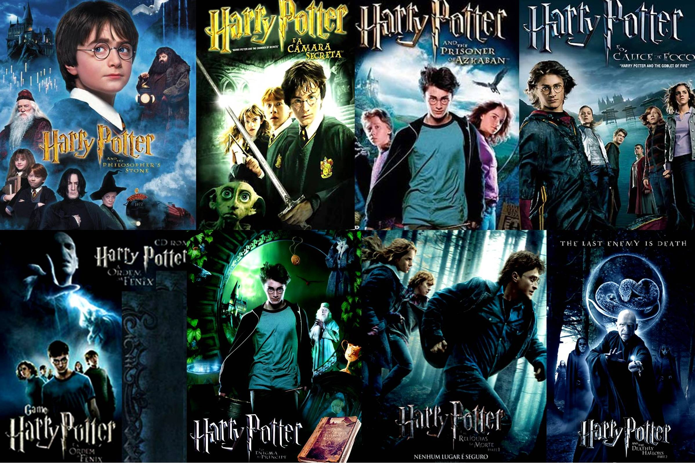
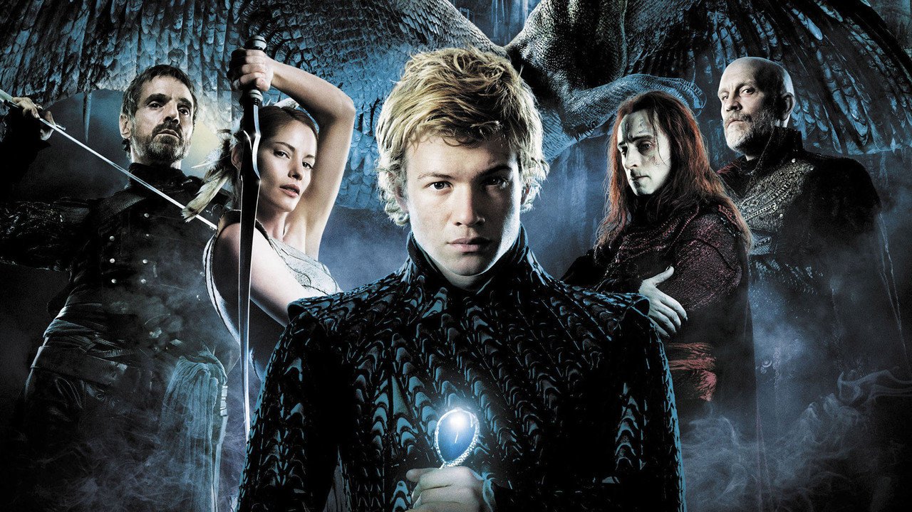
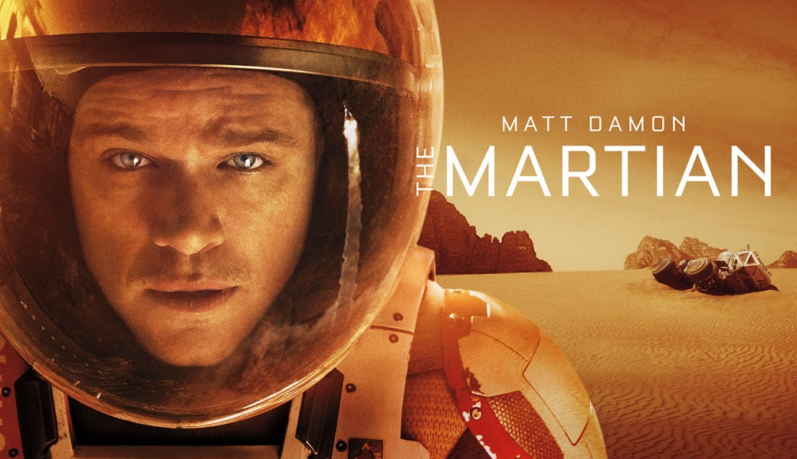

Counter Strike : Global Offensive

Counter-Strike: Global Offensive (CS: GO) засновується на тій самій ігровій механіці, що привела серію до успіху 15 років тому. CS: GO пропонує як нові мапи, персонажів і зброю, так і сучасну переробку класики серії CS (de_dust та інші). Окрім того, в CS: GO введені нові ігрові режимі, пошук матчів, таблиці рекордів і багато іншого. «Counter-Strike захопила ігрову індустрію зненацька — дивакувата модифікація стала найпопулярнішою у світі екшн-грою для ПК майже відразу після свого випуску в серпні 1999 року», — каже Дуґ Ломбарді з Valve. — «За останні 12 років вона залишалась одною з найпопулярніших ігор у світі, а також одною з головних кіберспортивних дисциплін, і розійшлася тиражом у 25 мільйонів копій по всьому світу за час існування серії. CS: GO обіцяє розширити відмічений нагородами ігролад CS, і подарувати його не тільки гравцям на персональних комп’ютерах, але й перенести його на ігрові консолі та платформу Mac.»
Crossout

Join the Open Beta of Crossout, the post-apocalyptic MMO Action game! Craft your unique battle machines from dozens of interchangeable parts and destroy your enemies in explosive PvP online battles! Key Features: Unique vehicles, crafted by the players using a wide range of available parts: From nimble buggies to heavily tracked off-road vehicles or combat platforms on antigrav fields. Complete freedom of creativity and thousands of possible combinations: Create vehicles of any shape using dozens of parts, wide variety of armour and weapons as well as support systems. Advanced damage model: Destroy any part of an enemy machine and it will affect the vehicle's performance immediately. Huge arsenal of weapons: From chain saws, power-drills over machine guns to rocket launchers, flying drones and stealth generators. Your own workshop: Create new, advanced parts and auction them at the in-game marketplace. Trading options between players: Every piece that you have gathered in the battle can be sold to other players. Choose your own battle strategy: The only thing that matters is the Survival and Victory! CROSSOUT - The Road to Apocalypse In 2021 a mysterious viral epidemic known as the ‘Crossout’ swept the planet, countries and populations simultaneously began to fall at an alarming rate all over the Earth. Those who did not die in the first few days, were plagued by hallucinations and headaches, many people went mad, others and committed suicide. The source of the disease could not be detected but the cities that were once the vibrant social and economic beacons of humanity were left ravaged and deserted. Survivors gradually began to change — after fifteen years of transformation, the changes became visible. The most noticeable metamorphosis occurred in the eyes of the affected — some began to glow, while others resembled black holes. To hide their unnatural looks and conceal the mutation, people started wearing padded clothing and sunglasses. Twenty years have passed after ‘Crossout’. Humans still remember their life before the disaster. As always, there are groups trying to recover the old world, while others enjoy the chaos and destruction. But there are those who are not human any more. They hide their faces behind masks, and their motives are unknown.
MUSIC
Imagine Dragons

Imagine Dragons — інді-рок-група, до складу якої входить четверо людей. Була заснована в Лас-Вегасі в 2008 році. Назва групи являє собою анаграму вислову Ragged Insomnia (укр. Рване безсоння), значення якої знають лише Ден, Бен, Вейн і Деніел. Ден Рейнольдс, фронтмен, створив її, коли вчився в Університеті Бригама Янга. Потім він залучив свого друга Вейна Сермона, який відмінно грав на гітарі. Група стрімко набирала популярність. А вже у Лас-Вегасі до Дена та Вейна приєдналися басист Бен МакКі і барабанщик Деніел Платцман, друзі Сермона. На початку 2009-го хлопці приступають до роботи у студії. І вже 1 лютого випускають свій перший EP Imagine Dragons. А 1 квітня наступного року світ побачив їх EP Hell and Silence (у запису брав участь номінант «Греммі» Марк Нідхем). Обидва EP були записані у звукозаписній студії Battle Born Studios. Незабаром їм було запропоновано виступити на щорічному фестивалі Bite of Las Vegas, як «Найбільш затребувана група 2010» на місцевому 107.9FM. Вони були вибрані хедлайнерами на Vegas Music Summit, а Лас Вегас CityLife назвав їх «Групою, яку необхідно побачити вживу», вони стали «Найкращою інді групою 2010 року» на думку Las Vegas Weekly, і були удостоєні премії «Найкраща платівка 2011 року» від журналу Vegas Seven. У листопаді 2011 року Imagine Dragons підписали контракт з американським звукозаписним лейблом Interscope Records. Вони тісно співпрацювали з продюсером Алексом Да Кідом, з яким вони і записали свій перший диск в Вест-Голлівуді. Їх EP був названий Continued Silence і випущений 14 лютого 2012 року. До випуску свого дебютного альбому Imagine Dragons готувалися дуже ретельно. «Випускаючи серію EP, ми розвідували ґрунт. Нам хотілося, щоб наш дебютний альбом був вдалим» — зізнався в одному інтерв'ю Вейн. 4 вересня світ почув Night Visions, перший повноцінний альбом драконів. Він досяг 2 позиції в чарті Billboard 200. Сингл «It's Time» зайняв 22-у сходинку в Billboard Hot 100, 4-ту в Billboard Alternative і в Billboard Rock, а зараз став платиновим.
FILMS
Harry Potter

Harry Potter is a series of fantasy novels written by British author J. K. Rowling. The novels chronicle the life of a young wizard, Harry Potter, and his friends Hermione Granger and Ron Weasley, all of whom are students at Hogwarts School of Witchcraft and Wizardry. The main story arc concerns Harry's struggle against Lord Voldemort, a dark wizard who intends to become immortal, overthrow the wizard governing body known as the Ministry of Magic, and subjugate all wizards and muggles, a reference term that means non-magical people. Since the release of the first novel, Harry Potter and the Philosopher's Stone, on 26 June 1997, the books have found immense popularity, critical acclaim and commercial success worldwide. They have attracted a wide adult audience as well as younger readers, and are often considered cornerstones of modern young adult literature.[2] The series has also had its share of criticism, including concern about the increasingly dark tone as the series progressed, as well as the often gruesome and graphic violence it depicts. As of May 2013, the books have sold more than 500 million copies worldwide, making them the best-selling book series in history, and have been translated into seventy-three languages.[3][4] The last four books consecutively set records as the fastest-selling books in history, with the final instalment selling roughly eleven million copies in the United States within twenty-four hours of its release. The series was originally published in English by two major publishers, Bloomsbury in the United Kingdom and Scholastic Press in the United States. A play, Harry Potter and the Cursed Child, based on a story co-written by Rowling, premiered in London on 30 July 2016 at the Palace Theatre, and its script was published by Little, Brown. The original seven books were adapted into an eight-part film series by Warner Bros. Pictures, which has become the second highest-grossing film series of all time as of August 2015. In 2016, the total value of the Harry Potter franchise was estimated at $25 billion,[5] making Harry Potter one of the highest-grossing media franchises of all time. A series of many genres, including fantasy, drama, coming of age, and the British school story (which includes elements of mystery, thriller, adventure, horror and romance), the world of Harry Potter explores numerous themes and includes many cultural meanings and references.[6] According to Rowling, the main theme is death.[7] Other major themes in the series include prejudice, corruption, and madness.[8] The success of the books and films has ensured that the Harry Potter franchise continues to expand, with numerous derivative works, a travelling exhibition that premiered in Chicago in 2009, a studio tour in London that opened in 2012, a digital platform on which J.K. Rowling updates the series with new information and insight, and a pentalogy of spin-off films premiering in November 2016, among many other developments. Most recently, themed attractions, collectively known as The Wizarding World of Harry Potter, have been built at several Universal Parks & Resorts amusement parks around the world.
Eragon

Eragon is the first novel in the Inheritance Cycle by Christopher Paolini. After writing the first draft for a year, Paolini spent a second year rewriting and fleshing out the story and characters. His parents saw the final manuscript and in 2001 decided to self-publish Eragon;[1] Paolini spent a year traveling around the United States promoting the novel. By chance, the book was discovered by Carl Hiaasen, who got it re-published by Alfred A. Knopf. The re-published version was released on August 26, 2003. The book tells the story of a farm boy named Eragon, who finds a mysterious stone in the mountains. Not knowing the stone's origin or worth, he attempts to use it as payment to a butcher. A dragon he later names Saphira hatches from the stone, which was really an egg. When the evil King Galbatorix finds out the general location of the egg he sends the Ra'zac to acquire it. By that time Saphira had been growing for a while and takes Eragon to the Spine after Ra'zac appear in their village Carvahall. Eragon and Saphira are forced to flee from their hometown, with a storyteller called Brom, and decide to search for the Varden, a group of rebels who want the downfall of Galbatorix. Critics of Eragon often point out its similarities to other works such as Earthsea, Dragonlance, and Star Wars.[2] Reviewers have also called the book a notable achievement for such a young author as Paolini. Eragon was the third-best-selling children's hardback book of 2003, and the second-best-selling paperback of 2005. It placed on the New York Times Children's Books Best Seller list for 121 weeks and was adapted as a feature film of the same name that was released on December 15, 2006.
The Martian

The Martian is a 2015 science fiction film directed by Ridley Scott and based on Andy Weir's 2011 novel of the same name. Matt Damon stars as an astronaut who is mistakenly presumed dead and left behind on Mars. The film depicts his struggle to survive and others' efforts to rescue him. The film's ensemble cast also features Jessica Chastain, Kristen Wiig, Jeff Daniels, Michael Peña, Kate Mara, Sean Bean, Sebastian Stan, Donald Glover, Aksel Hennie and Chiwetel Ejiofor. The film, produced through 20th Century Fox, is a co-production of the United States and the United Kingdom.[2] Producer Simon Kinberg began developing the film after Fox optioned the novel in March 2013. Drew Goddard then adapted the book into a screenplay and was initially earmarked as director. Ensuing difficulties led to Ridley Scott's appointment as the movie's director in lieu of Drew Goddard. With Matt Damon in place as the title character the production was subsequently approved. Filming began in November 2014 and lasted approximately seventy days. Twenty sets were built on a sound stage in Budapest, Hungary, one of the largest in the world. Wadi Rum in Jordan was also used as a backdrop for filming. The film premiered at the 2015 Toronto International Film Festival on September 11, 2015, while the London premiere was held on September 24, 2015. The film was released in the United Kingdom on September 30, 2015 and in the United States on October 2, 2015 in 2D, 3D, IMAX 3D and 4DX.[5] It received positive reviews and grossed over $630 million worldwide, becoming Scott's highest-grossing film to date, as well as the tenth-highest-grossing film of 2015. It received several accolades, including the Golden Globe Award for Best Motion Picture – Musical or Comedy, seven Academy Award nominations, including Best Picture and Best Adapted Screenplay for Goddard, and the 2016 long form Hugo Award for Best Dramatic Presentation. Damon won the Golden Globe Award for Best Actor – Motion Picture Musical or Comedy and was nominated for several awards including the Academy Award for Best Actor, the BAFTA Award for Best Actor in a Leading Role, and the Critic's Choice Award for Best Actor.